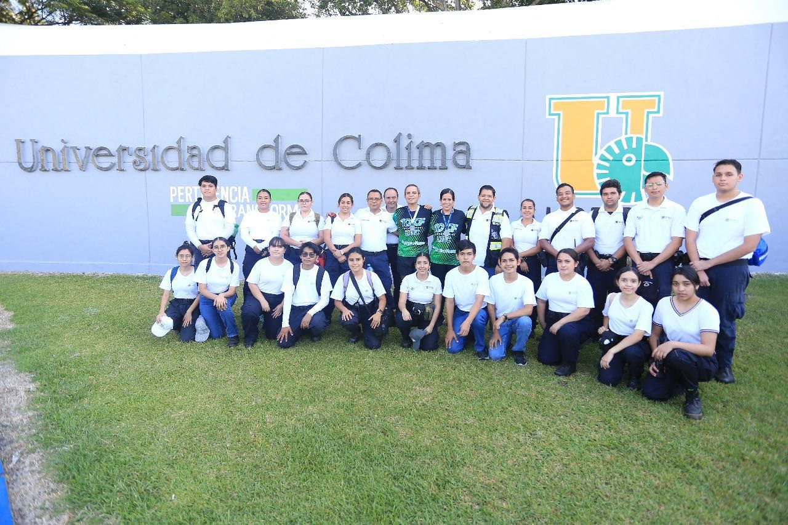
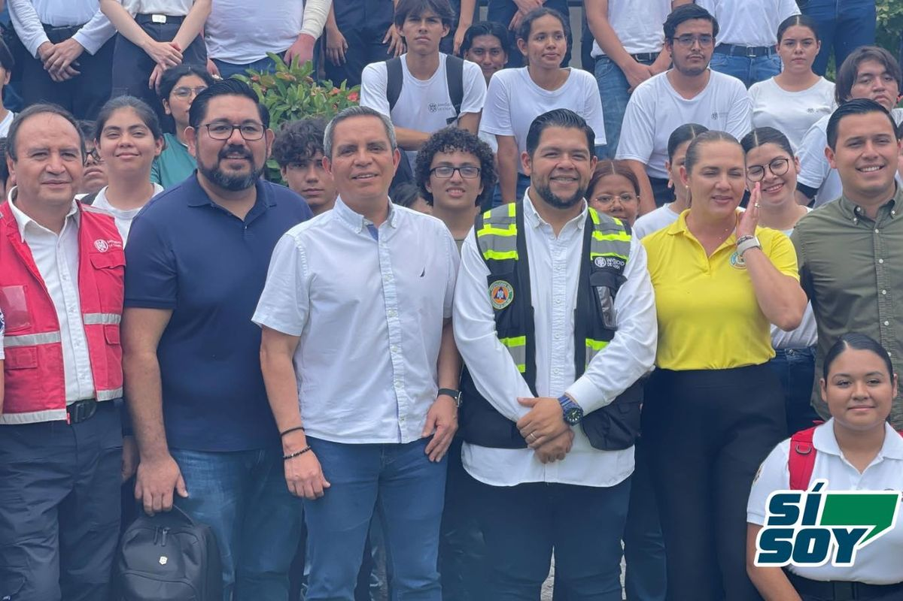
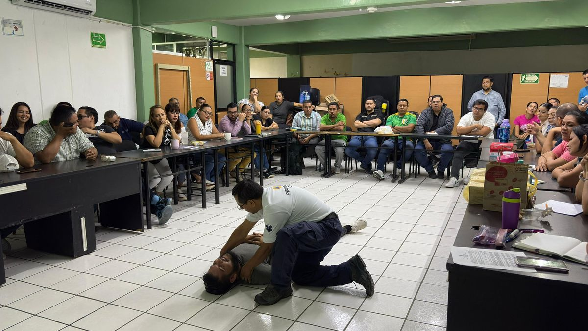

Prevención
Identificamos los riesgos de cada instalación y diseñamos programas internos para reducirlos antes de que ocurra un evento.
Universidad de Colima
Trabajamos para salvaguardar la integridad de estudiantes, personal y visitantes mediante prevención, auxilio y recuperación ante emergencias.

Qué hacemos
Identificamos los riesgos de cada instalación y diseñamos programas internos para reducirlos antes de que ocurra un evento.
Brigadas capacitadas responden de forma rápida y organizada: primeros auxilios, evacuación, combate de incendios y rescate.
Acompañamos el regreso a la normalidad y aprendemos de cada evento para mejorar nuestros protocolos.
Misión
Nuestra misión es salvaguardar la integridad física de estudiantes, personal y visitantes ante cualquier emergencia o desastre que pueda presentarse. Lo hacemos mediante acciones de prevención, auxilio y recuperación, enfocadas en reducir riesgos y fomentar una respuesta rápida y efectiva.
Buscamos construir una comunidad universitaria donde cada integrante conozca su papel durante una crisis.


Historia
La Unidad de Protección Civil de la Universidad de Colima nació para cuidar y proteger a la comunidad universitaria ante situaciones de riesgo. Su desarrollo ha ido de la mano con la evolución de la protección civil en México, especialmente después del sismo de 1985.
Desde sus inicios, la universidad ha identificado los riesgos específicos de sus instalaciones y creado programas internos de prevención y respuesta. Las brigadas universitarias se han consolidado como un pilar de la seguridad institucional.
Ante una emergencia
Respira, evalúa lo que ocurre y evita provocar pánico a tu alrededor.
Atiende las indicaciones del personal con chaleco o identificación de brigada.
Usa las escaleras, nunca los elevadores, y avanza sin correr ni regresar por objetos.
Permanece ahí hasta que la brigada autorice el regreso al inmueble.
Emergencias 24 h: 312 316 1017. Si hay peligro inmediato para la vida, llama primero al 911.
Últimas novedades